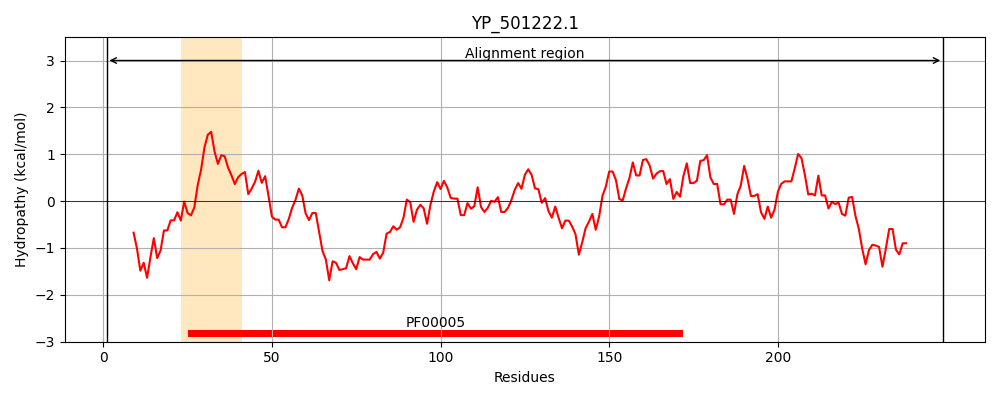
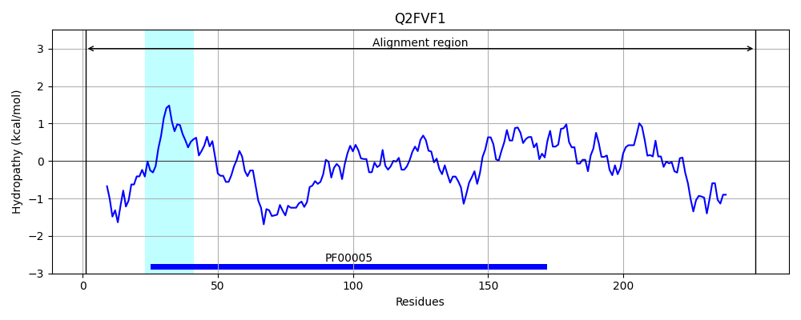
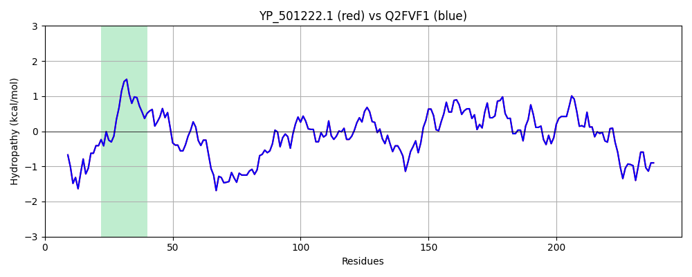

Hit Accession: Q2FVF1
Hit TCID: 3.A.1.5.43
Hit Description: gnl|BL_ORD_ID|13231 gnl|TC-DB|Q2FVF1|3.A.1.5.43 Peptide ABC transporter, ATP-binding protein, putative OS=Staphylococcus aureus (strain NCTC 8325) GN=SAOUHSC_02763 PE=4 SV=1
Mach Len: 249
e:0.000000
Query TMS Count : 1
Hit TMS Count: 1
TMS-Overlap Score: 0.950000
Predicted Substrates:None
BLAST Alignment:
Score: 1268 , Bit scores: 493 bits, E-value: 9.2e-180, Alignment length: 249, Percentage identity: 100
Query: 1 MIKIKDVEKSYQSAHVFKRRRTPIVKGVSFECPIGATIAIIGESGSGKSTLSRMILGIEKPDKGCVTLNDQPMHKKKVRRHQIGAVFQDYTSSLHPFQTVREILFEVMCQCDGQPKEVMEVQAITLLEEVGLSKAYMDKYPNMLSGGEAQRVAIARAICINPKYILFDEAISSLDMSIQTQILDLLIHLRETRQLSYIFITHDIQAATYLCDQLIIFKNGKIEEQIPTSALHKSDNAYTRELIEKQLSF 249
MIKIKDVEKSYQSAHVFKRRRTPIVKGVSFECPIGATIAIIGESGSGKSTLSRMILGIEKPDKGCVTLNDQPMHKKKVRRHQIGAVFQDYTSSLHPFQTVREILFEVMCQCDGQPKEVMEVQAITLLEEVGLSKAYMDKYPNMLSGGEAQRVAIARAICINPKYILFDEAISSLDMSIQTQILDLLIHLRETRQLSYIFITHDIQAATYLCDQLIIFKNGKIEEQIPTSALHKSDNAYTRELIEKQLSF
Sbjct: 1 MIKIKDVEKSYQSAHVFKRRRTPIVKGVSFECPIGATIAIIGESGSGKSTLSRMILGIEKPDKGCVTLNDQPMHKKKVRRHQIGAVFQDYTSSLHPFQTVREILFEVMCQCDGQPKEVMEVQAITLLEEVGLSKAYMDKYPNMLSGGEAQRVAIARAICINPKYILFDEAISSLDMSIQTQILDLLIHLRETRQLSYIFITHDIQAATYLCDQLIIFKNGKIEEQIPTSALHKSDNAYTRELIEKQLSF 249 | Protein Hydropathy Plots: |
|---|
|  |  |
Pairwise Alignment-Hydropathy Plot:
|
|---|
|  |